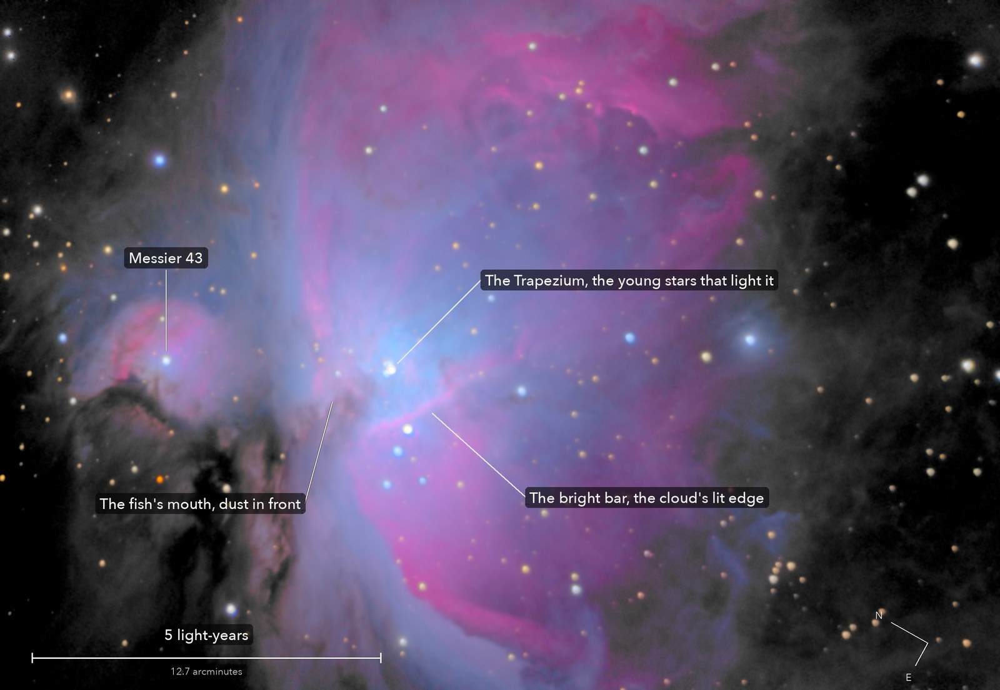

The Orion Nebula
Messier 42 and Messier 43, a star nursery in the sword of Orion
The nearest big nursery of stars to us: a cloud of gas and dust lit from inside by the young, hot stars of the Trapezium, which formed out of it in the last million years or so. Their light carves the cloud into ridges and bays; the dark lanes are dust in front of the glowing gas. The smaller round nebula beside it, Messier 43, is the same cloud lit by one star.
What you are looking at

Swipe sideways to see the rest. Tap the picture for full size.
- Distance
- About 1,350 light-years (measurements run 1,270 to 1,400)
- This picture spans
- About 14 light-years; one pixel is about 320 times the distance from the Earth to the Sun
- The light left
- About 1,350 years ago, around the year 680
- Honest note
- The middle is far too bright for the long frames, so it comes from 44 frames of 2 seconds; the glow fills the whole frame, so the darkest part is still nebula, not empty sky
Photography notes
165 frames of 30 s and 44 of 2 s, from one night. 82 minutes of 30 s frames for the nebula and 44 frames of 2 s for its bright middle.
Equipment
- Telescope
- Celestron 8SE Schmidt-Cassegrain: 203 mm aperture, 2,081.7 mm focal length by plate solve of this stack, f/10.3
- Camera
- Sony a6000, stock, at prime focus: APS-C 23.5 x 15.6 mm, 6000 x 4000, 3.9 micron pixels, RAW
- Mount
- Sky-Watcher EQ6-R, unguided. Set down about 10 degrees off the pole; aligned from four plate-solved photos, both axes driven from that model. Dithered every three frames
Acquisition
- Exposures
- 165 x 30 s at ISO 1600: 82.5 minutes; and 44 x 2 s at ISO 400, 88 s, for the bright middle
- Frames
- 241 taken, 209 kept. Long: 165 of 193; short: 44 of 48 (a 49th left a sidecar but no RAW on disk). Long frames dropped: 21 smeared (every star stretched the same way; 8 of them also with wide stars), 4 with soft stars, 2 dimmed by haze, and the one frame taken before a firmware flash, as the first after the slew. Short: 2 smeared, 1 soft, 1 taken 2 s after a move
- Dithering
- Every 3 frames, the long and the short alike: a spiral of steps up to 1.5 arcmin from the start (the first steps up to 1)
- Sampling
- 0.777 arcsec per pixel: one pixel per 2 x 2 colour cell, never enlarged. Stars 6.41 arcsec wide (half-flux) in the joined stack, 6.46 in the reference frame; the long frames' median 6.19, the short 6.50
- Field
- 36.5 x 25.2 arcmin: the largest upright rectangle where at least half the long frames have data; inside it 65 percent of the pixels have every long frame and 86 percent at least three quarters. Not turned (north 61 degrees anticlockwise of up)
- When
- The night of 17 October 2026, before dawn. 30 to 50 degrees up
- Darks
- None taken. Hot pixels found from the frames themselves, one map for the long frames and one for the short, repaired by the 3 x 3 median of their colour plane
- Flats
- No flat frames. The hybrid flat of 13 October (large scale from that night's open sky, dust from its twilight frames), as the Dumbbell Nebula and the Triangulum Galaxy used tonight. Its large scale cannot be judged on this run: the nebula's glow is in every frame. The short frames get the same flat
- Calibration
- Dust that moved since 13 October, measured on this run's own dithered long frames (each frame against the first stack put back on its sensor grid, so the nebula cancels; each shadow seen in the first and the second half of the run alone) and divided out: 12 shadows, 0.96 percent of the sensor. Among them the new crescent, 12.2 percent deep after the 13 October flat, left at 1.1 percent. Nothing judged within 5 arcmin of the Trapezium, where the nebula is too bright and structured
Processing
- Registration
- Each frame placed first by its own plate solve, then rotation and shift on the stars onto one long frame, the short frames too; weighted rms at most 0.64 px for the long frames, 1.62 for the short. The field turned 5.4 degrees over the run. The air's prism: red sat 0.36, 0.51 and blue -0.61, -0.76 sensor px from green, measured and taken out in the one resampling
- High dynamic range
- The 2 s stack replaces the 30 s one wherever any 30 s frame came within 7 percent of clipping, in any colour: 1.76 square arcmin round the Trapezium, grown one colour cell, with a smooth ramp in brightness so there is no step. 751 pixels are white, where even the 2 s frames clipped. The scale between the two is measured, not assumed: 62.65 on the nebula (each colour 62.6 to 63.3, the same at every brightness) against the 60 the exposures and ISOs give, and 65.2 on 66 stars. Neither difference is explained: the camera's ISO or shutter not being exactly nominal is a guess, not checked. The join uses the measured 62.65
- Stacking
- RAW colour planes (no demosaic), hot pixels by 3 x 3 median, registered on stars with rotation. The long frames by proper coaddition (Zackay and Ofek: each frame weighted by its own measured blur and noise); the old 3-sigma clipped weighted mean made beside it from the same frames gives 1.5 to 2.3 percent less point-source signal to noise and stars 0.5 percent wider: nothing a viewer can see. Noise 12.9 times under one frame, as the square root of 165 says. The short frames by the 3-sigma clipped weighted mean. One constant per colour per frame, set on the darkest 30 percent of the area every long frame covers: the faintest nebula, not the true sky
- Colour
- The camera's colour matrix with its white balance set by 13 Gaia stars in the field (red x 0.99, blue x 1.17). Colour only where the light carries it; where even the 2 s frames came near clipping, white
- Finish
- Star colours from Gaia, the camera's colour matrix. Arcsinh stretch (soft 12 DN, white 250,000 DN: one curve from the faint loops to the core); black at the faintest part's own level, S-curve 0.25, saturation x 1.2; the dark parts smoothed (bilateral 3 px). 5.8 percent of the picture is exactly black
- Picture size
- 2820 x 1948 pixels
- Software
- Capture and mount: Observatory (Elixir on a Raspberry Pi 3). Stacking: numpy, OpenCV, rawpy. Plate solving: astrometry.net. Stacked from the camera's RAW frames. Nothing generated.
What the picture shows
- What is real
- The nebula's loops repeat in the odd and the even 30 s frames, each stacked alone: 76 of 76 tiles of 3 arcmin, and 26 of the 26 faintest; 14 of 14 at 18 to 30 arcmin from the Trapezium. The faint outer loops are real. Tiles touching the joined middle are left out
- Honest limits
- The test compares structure at the scale of loops and ridges, not smooth glow, and with the nebula filling the frame there is no blank sky to say how far the faintest light stands above the true sky. The fish's mouth is named from the bay's known position, not a catalogue entry, then put on the darkest point near it
Everything above as Markdown, ready to paste into a forum post.
© 2026 Brad Gessler · Celestron 8SE (8 inch, f/10.3) and Sony a6000 on an EQ6-R · San Francisco Bay Area · night of 17 October 2026
© 2026 Brad Gessler. The pictures and the words are his own; all rights reserved.